Overview
This is where you enter the Redemption Coliseum. Click the Lobby overview on the left for a detailed view of all components.
(Note: Some of the pictures have bigger versions. Just click on them to activate the bigger version and click on the bigger version to close them again.)
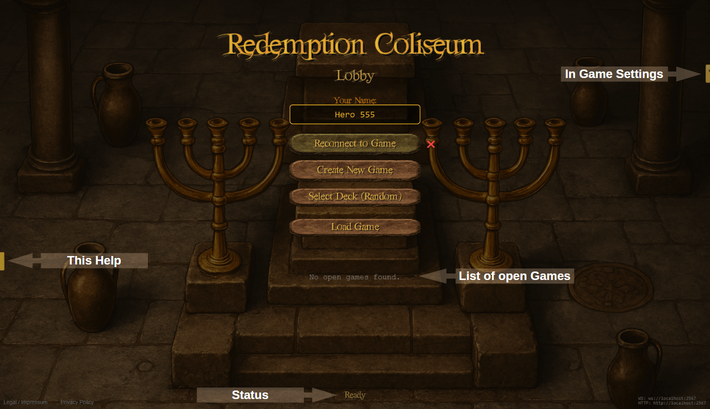
This is where you enter the Redemption Coliseum. Click the Lobby overview on the left for a detailed view of all components.
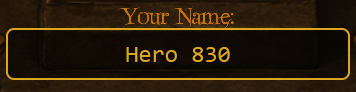
Enter your name here.
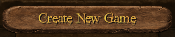
Click this button to start a new game.
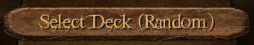
Load your own deck by clicking this button. The deck must be in Lackey .txt format. Decks are loaded from your local folder. Without loading a deck some random 50 cards are selected.
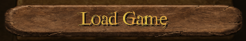
Load a previously saved game by clicking this button. Games are loaded from your local folder.
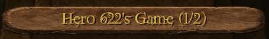
Shows all currently open games in a list. You can select a game to join it.
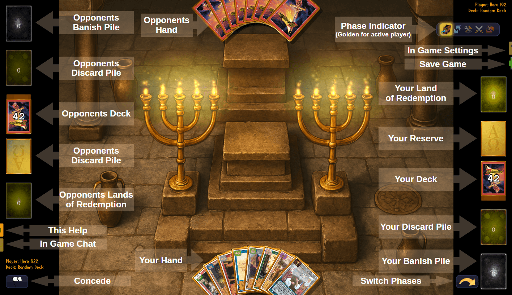
This is where all the fun and action happens. Click the board overview on the right for a detailed view of all game components.
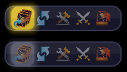
This toolbar displays all turn phases, each represented by a unique icon. From left to right, these are:"
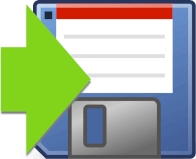
Games are saved to your local folder.
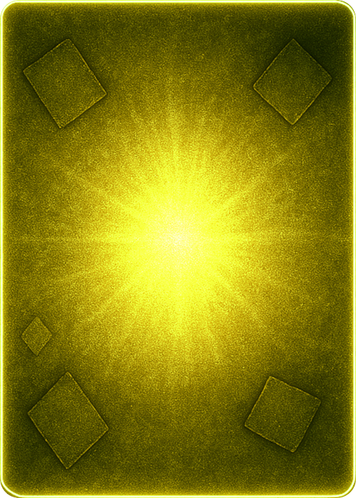
This area holds your rescued Lost Souls and characters. Once you have a total of five in your Land of Redemption, you win the game. You can move cards here by dragging and dropping them.
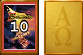
Reserve pile. It shows either a card back and the number of remaining cards, or the image on the right if the pile is empty. Note: Your opponent's empty reserve appears in a darker shade.
Deck pile. It shows either a card back and the number of remaining cards, or the image on the right if the pile is empty. Note: Your opponent's empty reserve appears in a darker shade. Note: In order to underdeck a card drag and drop it at the lower half of the deck (a small golden edge animation will appear at the lower edge of the deck to signal that the card gets underdeckted.)
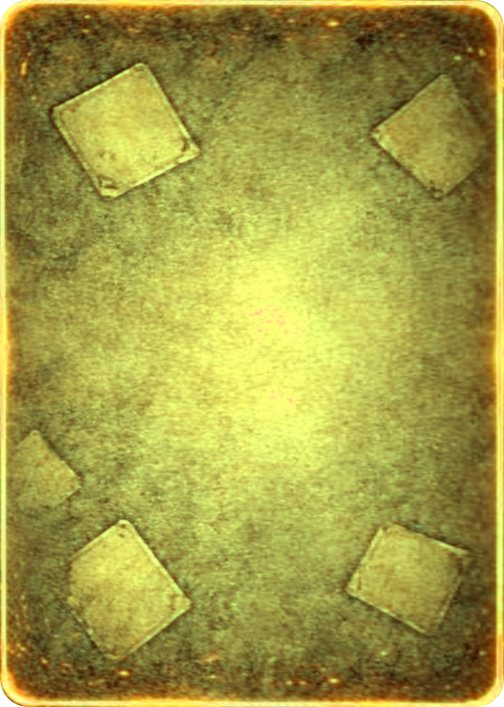
All cards that are discarded are placed here. You can move cards to this pile by dragging and dropping them.
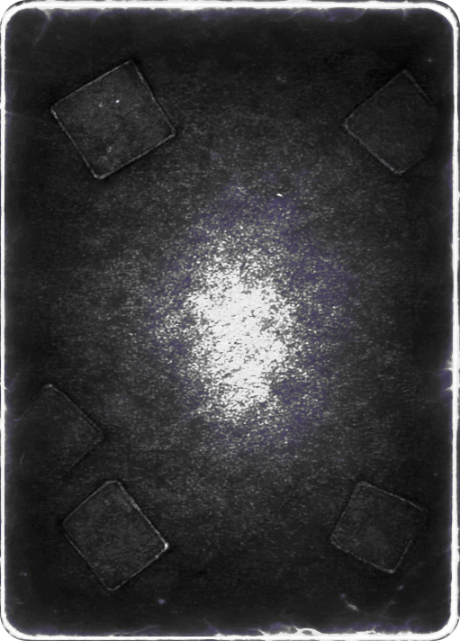
All cards that are banished or removed from game are placed here. You can move cards to this pile by dragging and dropping them.
This button only occurs for the active player. Pressing it will switch to the next phase (see also Phase Indicators above). When in Discard Phase and pressing this button the game switches the active player to your opponent.
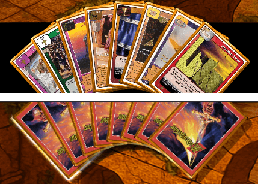
This is where you hold your cards during the game. You can play cards from here by dragging and dropping them onto the Field of Play. When doing so the current zone will be indicated you would drop them in. You can cards also drag and drop back from play into your hand. You can also drag and drop cards from your hand to any of your piles (except Land of Redemption). Dragging and dropping cards from opponents hand onto the field of play or any of opponents tile is also possible (except for opponents Land of Redemption). Dragging and dropping cards from one hand to the other can be done too. At the beginning of the game starting hands are drawn automatically. Also at the begin of each turn your draw 3 for turn will be done automatically. When hovering over a card and staying there for a littel while a bigger image of that card will be displayed (also in Field of Play). Double clicking on a card will flip it face down/up (also in Field of Play). Right clicking a card in your hand will turn it upside down or vice versa. Note: Your opponent's hand is not visible to you. It is represented by a card back fan.
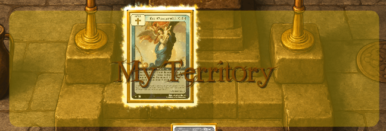
When dragging and dropping cards onto the field of play, the current zone you would drop them in will be indicated by a highlighted area. These zones are (from bottom to top):
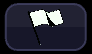
This button will end the game immediately and declare your opponent as the winner. Use this if you want to quit a game early. After a game ends you can return to the lobby.
This button will open the chat and log window. Here you can chat with your opponent and review the game log. Click on the chat button again to close the Chatlog.
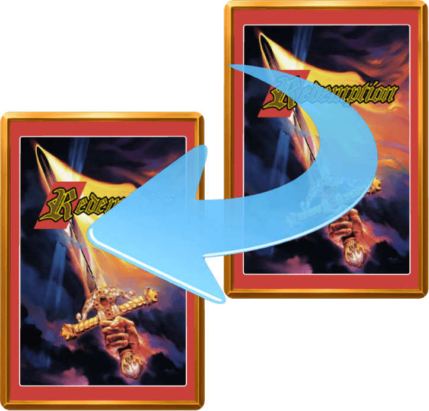
You can attach cards to other cards (e.g. equip weapons, place Lost Souls into Sites or Artifacts into Temples etc.) by dragging a card over another card and holding it there for a short while. An attach animation will appear and if you drop the card the attached icon will flash briefly.
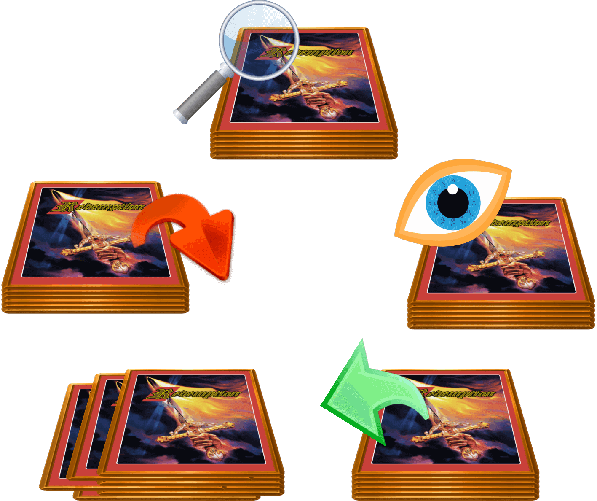
When right clicking on a pile which contains cards a Pile Menu (radial) appears The function of the menu items are as following (clockwise, beginning from the top):
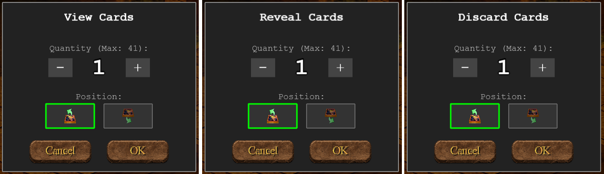
This dialog opens when you chose to either look at a deck or reveal it or discard from it. Here you can choose how many cards you want to look at, to reveal or to discard. And you can also choose whether to do that:
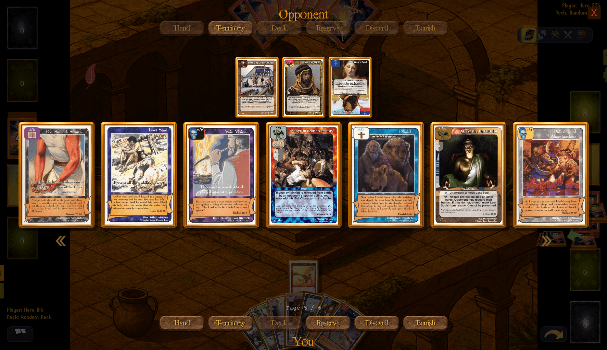
This dialog opens when you right click on a pile that contains cards and you choose to search that pile, look at cards in that pile or reveal cards from that pile - but also when you right click on oppoents hand. After opening you can scroll through the cards within that pile (or opponents hand) by clicking the double arrow buttons (left / right). If you want to scroll faster then just click on those buttons more quickly. Click on cards you want to select for the according action (reveal, search, ...). The cards you selected will be shown above the card selection area. When you are done select the appropriate zone or pile of you (bottom button row) or your opponent (top button row) to move the cards there. (At the moment cards moved to hands, or any piles are not displayed but can be looked up inside the Chat and Log panel.) Click on the red cross to close the dialog.
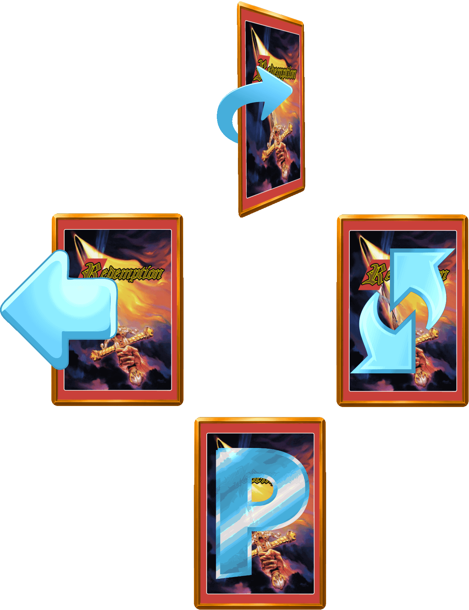
When right clicking on a card in the Field of Play a Card Menu (radial) appears The function of the menu items are as following (clockwise, beginning from the top):
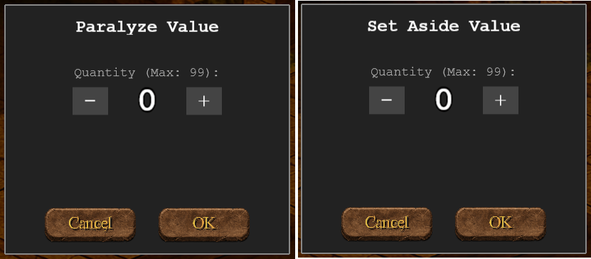
This dialog opens when you chose to either paralyze a card or set it aside. Here you can choose how many turns you want to paralyze or set aside the card. The number of turns is then displayed at that card. Note: The number automatically decreases by 1 during each upkeep phase of the controller of that card.